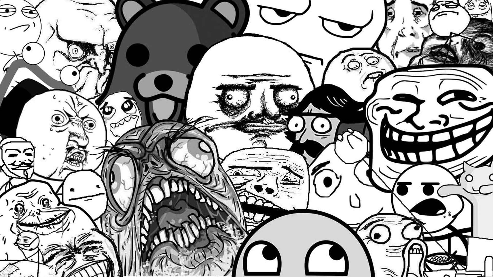

APA ITU MEME
Meme internet punya sejarah tersendiri di dunia, mulai dari
gambar hamster berjoget hingga meme-meme berbau politik era
kini. Bahkan meme tertentu dilarang di beberapa negara. Limor
Shifman dalam bukunya,
Memes in Digital Culture
, menjelaskan
meme internet
sebagai item digital. Namun tidak semua
bentuk item digital disebut meme.